| hav_result | n | percent |
|---|---|---|
| negative | 4336 | 68.51003 |
| positive | 1993 | 31.48997 |
Wastewater_HAV Analysis
1 Introduction
This report presents the analysis of surveillance data to assess:
-
-
-
2 Results
2.1 Descriptive Statistics
2.1.1 Positive Rate and summary table
- Positive rate of HAV result is 31.49.
- As shown in Table Table 1, out of
6329valid waste-water tested samples,1993were hepitetis A virus (HAV) positive test result and4336HAV_test negative result.
2.1.2 Monthly positive Trend (Epidemic Curve)
As Figure 3 indicates, the monthly positivity trend of
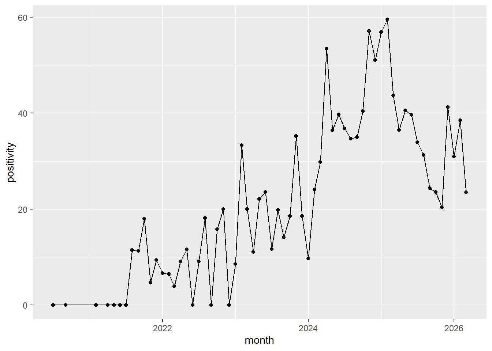
2.1.3 Positive by province and district
| site_province | positivity | total_tests |
|---|---|---|
| Western Cape | 50.00000 | 150 |
| Limpopo | 45.33333 | 75 |
| Northern Cape | 44.73684 | 38 |
| North West | 42.45283 | 106 |
| Mpumalanga | 37.97468 | 79 |
| Free State | 33.85827 | 254 |
| Gauteng | 30.92515 | 4983 |
| KwaZulu-Natal | 26.71480 | 277 |
| 26.66667 | 75 | |
| Eastern Cape | 24.31507 | 292 |
| district_name | positivity | total_tests |
|---|---|---|
| Frances Baard DM | 65.21739 | 23 |
| Cape Town MM | 50.00000 | 150 |
| Nelson Mandela Bay MM | 50.00000 | 44 |
| Bojanala Platinum DM | 45.34884 | 86 |
| Vhembe DM | 45.33333 | 75 |
| Ehlanzeni DM | 37.97468 | 79 |
| Ekurhuleni MM | 36.90909 | 2200 |
| Mangaung MM | 33.85827 | 254 |
| Umkhanyakude DM | 30.98592 | 71 |
| Ngaka Modiri Molema DM | 30.00000 | 20 |
| Johannesburg MM | 29.25714 | 875 |
| 26.66667 | 75 | |
| Ethekwini MM | 25.24272 | 206 |
| Tshwane MM | 24.79036 | 1908 |
| Buffalo City MM | 19.75806 | 248 |
| Namakwa DM | 13.33333 | 15 |
2.1.4 Laboratory Quality Indicators
- Failed test rate of the laboratory is 0.542.
- Missing HAV test rate of the laboratory 27.96.
2.2 Multilevel Logistic Regression
2.2.1 Intraclass Correlation for site_province Variation
An intraclass correlation coefficient (ICC) of 0.033 means that about 3.3% of the total variance in the HAV is attributable to differences between site_province, while about 96.7% is due to differences within groups (individual-level variation).
# Intraclass Correlation Coefficient
Adjusted ICC: 0.033
Unadjusted ICC: 0.0332.2.2 Intraclass Correlation for District_name Variation
An intraclass correlation coefficient (ICC) of 0.054 means that about 5.4 % of the total variance in the HAV is attributable to differences between district level.
# Intraclass Correlation Coefficient
Adjusted ICC: 0.054
Unadjusted ICC: 0.0542.2.3 Intraclass Correlation for site_name Variation
An intraclass correlation coefficient (ICC) of 0.095 means that about 9.5 % of the total variance in the HAV is attributable to differences between district level.
Overall:
# Intraclass Correlation Coefficient
Adjusted ICC: 0.095
Unadjusted ICC: 0.095A mixed-effects logistic regression with a random intercept for province and district showed that variation across them (province-level ICC ≈ 3.3%, and district level ICC ≈ 5.4%), indicating some clustering of the outcome within provinces and districts.
Relatively the variation is higher in site_name level (ICC ≈ 9.5%)
Table 4 indicates, model4; the three level mixed effects model better fits the data.
df AIC
model1 11 7551.091
model2 17 7547.0322.3 Hierarchical Analysis based on the selected Modlel
From the advanced three level hierarchical modeling Table 5, a generalized linear mixed model with a random intercept for site was fitted to assess geographic predictors of HAV positivity. Site-level clustering was low (ICC ≈ ). Significant district-level differences were observed, with Buffalo City MM associated with lower odds of HAV positivity and Frances Baard DM associated with substantially higher odds. Province-level effects were not statistically significant after adjustment. The model exhibited rank deficiency due to collinearity between district and province variables.
Generalized linear mixed model fit by maximum likelihood (Laplace
Approximation) [glmerMod]
Family: binomial ( logit )
Formula: hav_result_bin ~ site_province + district_name + (1 | site_name)
Data: waste_analysis
AIC BIC logLik -2*log(L) df.resid
7547.0 7661.8 -3756.5 7513.0 6312
Scaled residuals:
Min 1Q Median 3Q Max
-1.3744 -0.6767 -0.4928 1.1147 2.6025
Random effects:
Groups Name Variance Std.Dev.
site_name (Intercept) 0.2045 0.4522
Number of obs: 6329, groups: site_name, 56
Fixed effects:
Estimate Std. Error z value Pr(>|z|)
(Intercept) -0.84431 0.50735 -1.664 0.09608 .
site_provinceEastern Cape 0.83748 0.67357 1.243 0.21374
site_provinceFree State 0.18524 0.61283 0.302 0.76244
site_provinceGauteng -0.35096 0.53508 -0.656 0.51188
site_provinceKwaZulu-Natal 0.01117 0.65435 0.017 0.98638
site_provinceLimpopo 0.65359 0.64480 1.014 0.31076
site_provinceMpumalanga 0.35060 0.64444 0.544 0.58642
site_provinceNorth West -0.04448 0.77959 -0.057 0.95450
site_provinceNorthern Cape -1.08305 1.02527 -1.056 0.29081
site_provinceWestern Cape 0.75328 0.59973 1.256 0.20911
district_nameBojanala Platinum DM 0.72235 0.70765 1.021 0.30736
district_nameBuffalo City MM -1.47554 0.57178 -2.581 0.00986 **
district_nameEkurhuleni MM 0.41588 0.21686 1.918 0.05515 .
district_nameEthekwini MM -0.25672 0.54672 -0.470 0.63867
district_nameFrances Baard DM 2.57119 1.09263 2.353 0.01861 *
district_nameJohannesburg MM 0.28054 0.24522 1.144 0.25262
---
Signif. codes: 0 '***' 0.001 '**' 0.01 '*' 0.05 '.' 0.1 ' ' 1fit warnings:
fixed-effect model matrix is rank deficient so dropping 9 columns / coefficients2.3.1 Odds Ratios
Odds ratio of Table 6
| Term | Odds_Ratio | |
|---|---|---|
| (Intercept) | (Intercept) | 0.430 |
| site_provinceEastern Cape | site_provinceEastern Cape | 2.311 |
| site_provinceFree State | site_provinceFree State | 1.204 |
| site_provinceGauteng | site_provinceGauteng | 0.704 |
| site_provinceKwaZulu-Natal | site_provinceKwaZulu-Natal | 1.011 |
| site_provinceLimpopo | site_provinceLimpopo | 1.922 |
| site_provinceMpumalanga | site_provinceMpumalanga | 1.420 |
| site_provinceNorth West | site_provinceNorth West | 0.956 |
| site_provinceNorthern Cape | site_provinceNorthern Cape | 0.339 |
| site_provinceWestern Cape | site_provinceWestern Cape | 2.124 |
| district_nameBojanala Platinum DM | district_nameBojanala Platinum DM | 2.059 |
| district_nameBuffalo City MM | district_nameBuffalo City MM | 0.229 |
| district_nameEkurhuleni MM | district_nameEkurhuleni MM | 1.516 |
| district_nameEthekwini MM | district_nameEthekwini MM | 0.774 |
| district_nameFrances Baard DM | district_nameFrances Baard DM | 13.081 |
| district_nameJohannesburg MM | district_nameJohannesburg MM | 1.324 |
2.3.2 Visualization of Model Results
Visualization plot Figure 2
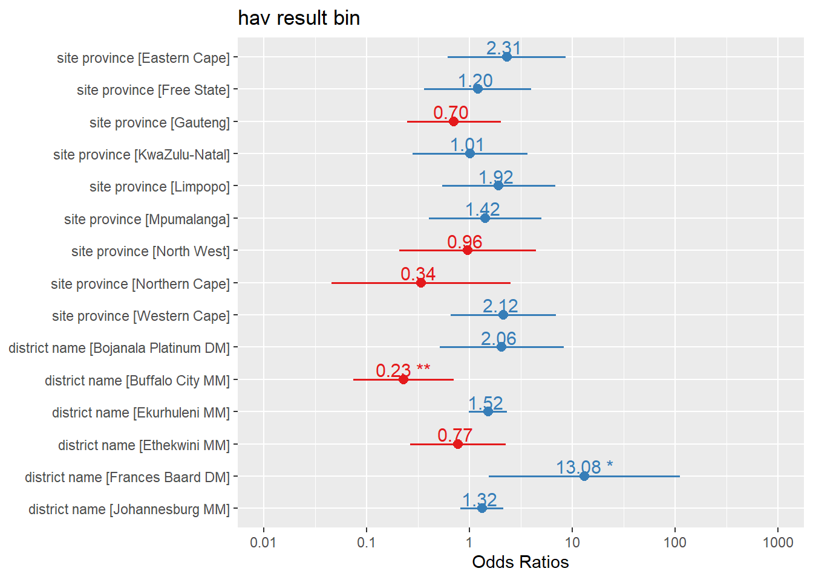
2.3.3 Model Diagnostics
- Residual diagnostics indicated mild deviations from the expected residual distribution, although no significant overdispersion or strong outlier effects were detected. Remaining structure in residuals suggests that additional predictors, particularly temporal effects, may improve model fit.
[1] FALSE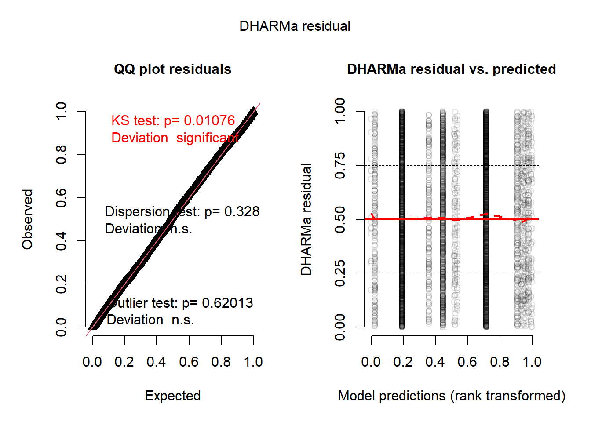
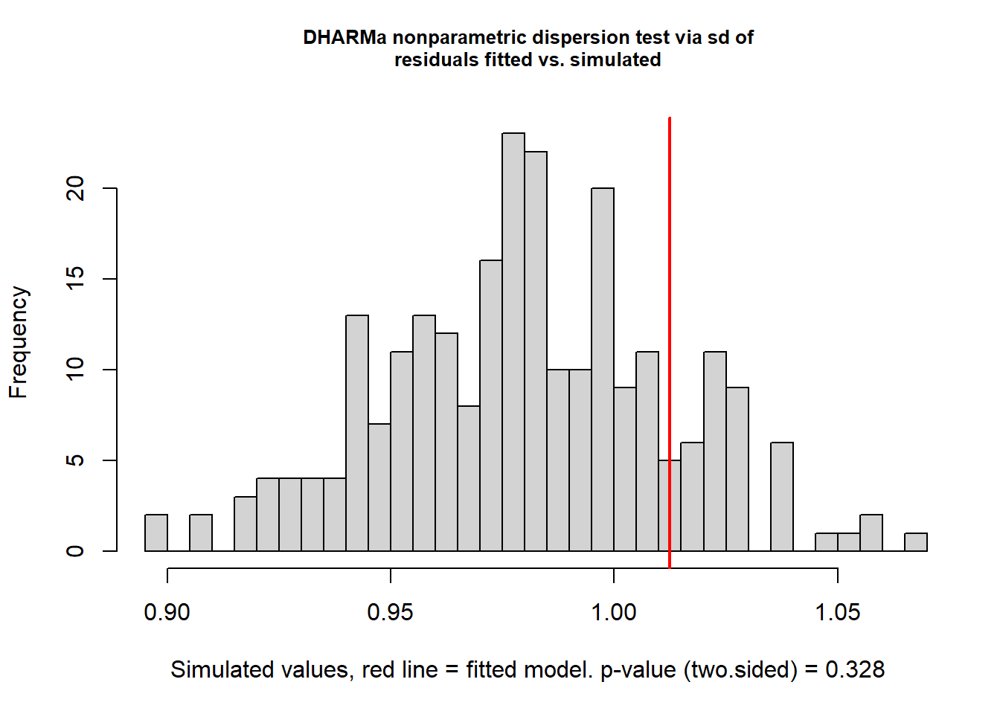
DHARMa nonparametric dispersion test via sd of residuals fitted vs.
simulated
data: simulationOutput
dispersion = 1.0332, p-value = 0.328
alternative hypothesis: two.sided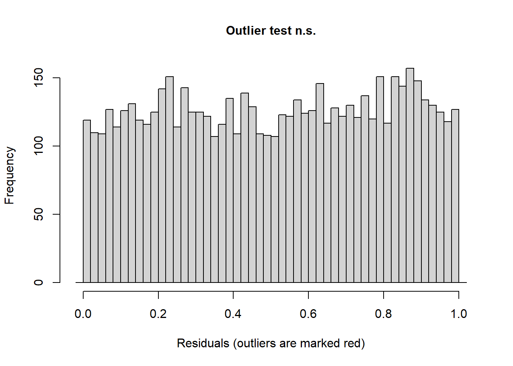
DHARMa outlier test based on exact binomial test with approximate
expectations
data: sim_res
outliers at both margin(s) = 46, observations = 6329, p-value = 0.6201
alternative hypothesis: true probability of success is not equal to 0.007968127
95 percent confidence interval:
0.005325957 0.009682895
sample estimates:
frequency of outliers (expected: 0.00796812749003984 )
0.007268131 2.4 Time Trend Analysis
Monthly hav case over time Figure 3 shows a clear shift from very low hav case counts in 2020/2021 to 2022 to a major surge beginning in early 2024, followed by a gradual decline with continued variability through 2025-2026.
- Structural change beginning around 2023.A major epidemic wave in 2024.
- Transition in to a lower but still persistent transmission level afterward.
- 2020/21 - 2022: cases stayed near zero, with occasional small spikes.
- 2023: a gradual upward trend begins, with several moderate increases reaching around 30-40 cases. Early 2024: a sharp outbreak occurs, with cases rapidly climbing above 100.
- Mid 2024: the highest peak appears around 125-30 cases.
- Late 2024-2025: cases decline but remain elevated compared with earlier years, fluctuating roughly between 35 and 75.
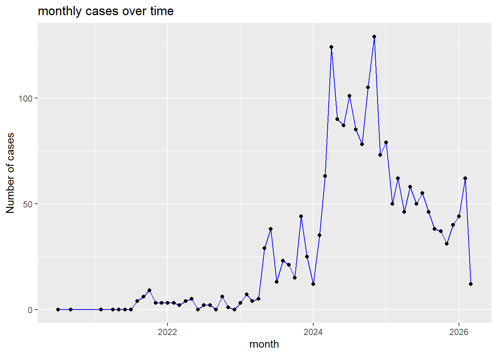
2.4.1 Add Moving Average line
- The monthly positivity trend demonstrated substantial temporal variation, with a marked increase during 2024 followed by a gradual decline. The moving-average curve suggested a nonlinear temporal pattern.
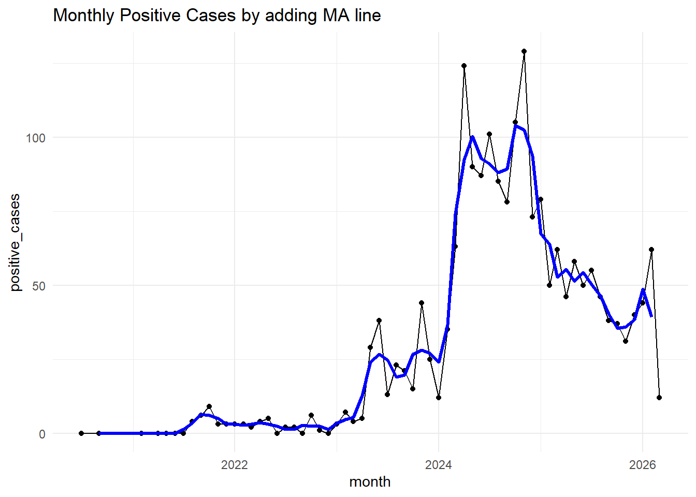
2.4.2 Detect Outbreaks
- Points doted by red line detected as outbreak at the time of 2024.
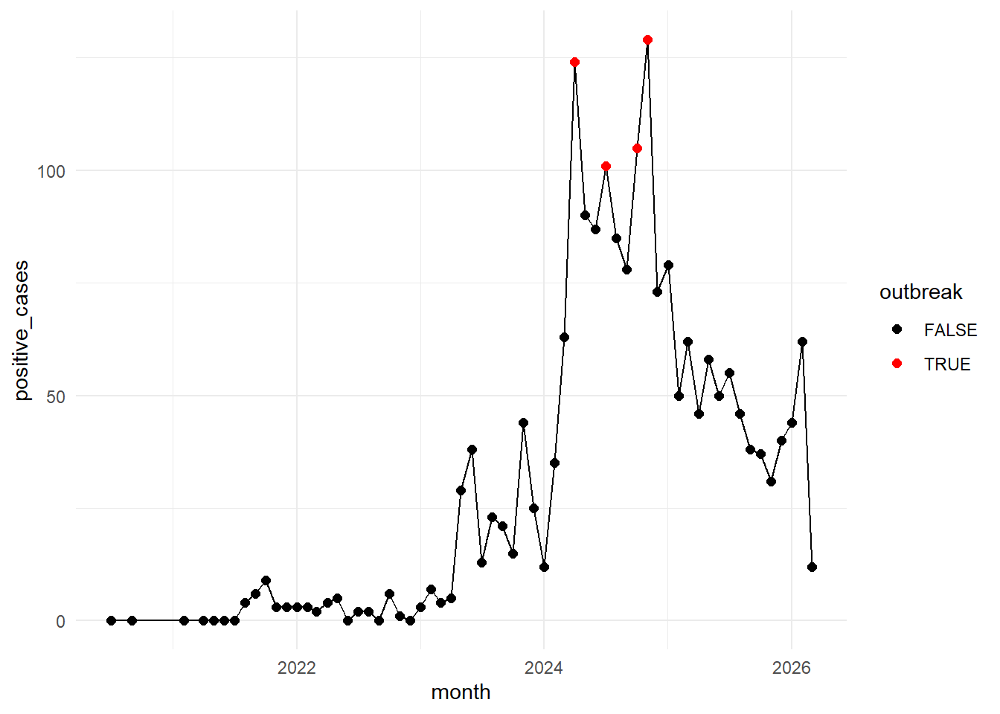
2.5 Time Series Analysis after areal Aggregation
Creating Model data from the original dataset
Monthly hav case over time Figure 4 shows a clear shift from very low hav case counts in 2020/2021 to 2022 to a major surge beginning in early 2024, followed by a gradual decline with continued variability through 2025-2026.
- Structural change beginning around 2023.A major epidemic wave in 2024.
- Transition in to a lower but still persistent transmission level afterward.
- 2020/21 - 2022: cases stayed near zero, with occasional small spikes.
- 2023: a gradual upward trend begins, with several moderate increases reaching around 30-40 cases. Early 2024: a sharp outbreak occurs, with cases rapidly climbing above 100.
- Mid 2024: the highest peak appears around 125-30 cases.
- Late 2024-2025: cases decline but remain elevated compared with earlier years, fluctuating roughly between 35 and 75.
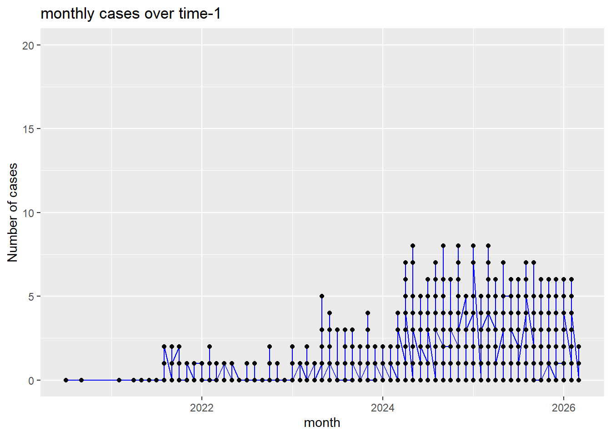
2.5.1 Add Moving Average line
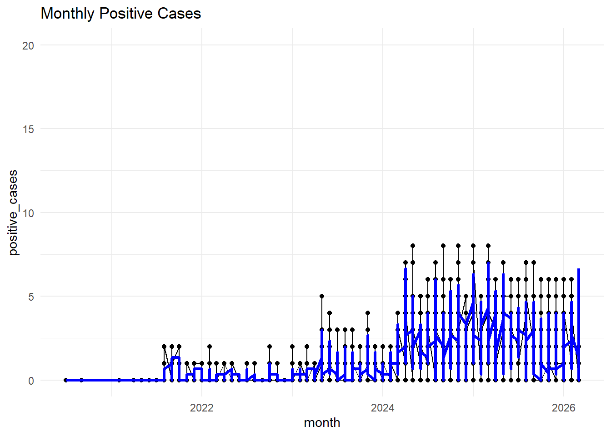
2.5.2 Detect Outbreaks

2.5.3 Decomposition Plot
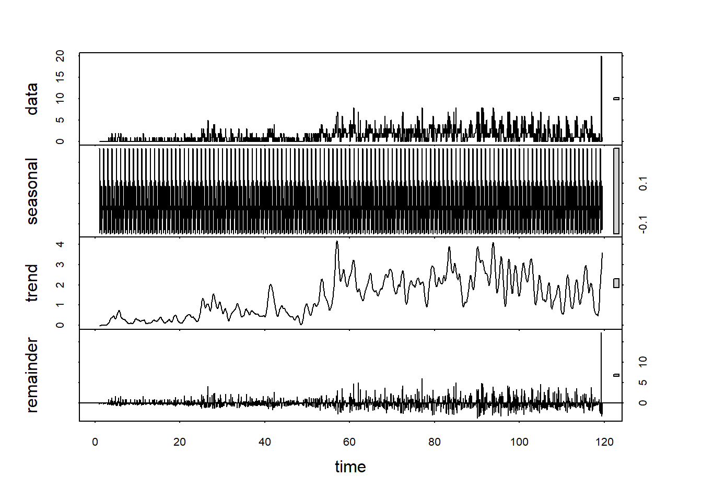
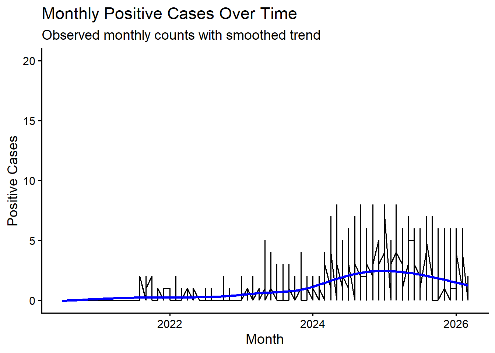
2.5.4 Count Time Series Modeling
Trend of monthly positive cases Figure 5
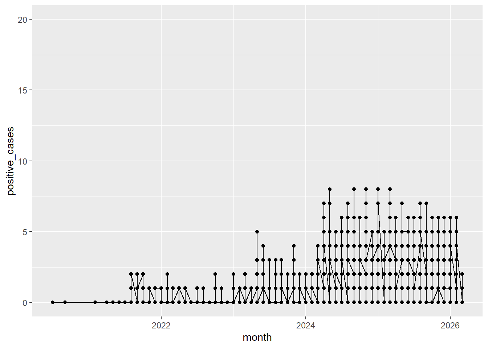
2.5.4.1 Poisson Time Series Model
Although the outcome consists of count data suitable for Poisson-based modeling, the observed autocorrelation, trend, and seasonal dependence indicate that simple Poisson regression would inadequately account for temporal dependence. Time-series count models incorporating autoregressive and seasonal structures, such as SARIMA, GLARMA, INGARCH, or Negative Binomial GAM frameworks, are likely more appropriate for robust inference and forecasting.
Baseline poisson model is Table 7
| Estimate | Std. Error | z value | Pr(>|z|) | |
|---|---|---|---|---|
| (Intercept) | -1.188 | 0.085 | -13.986 | 0 |
| time | 0.036 | 0.002 | 19.898 | 0 |
2.5.4.1.1 Assessment
Overdespersion of poisson regression model Table 8
| Dispersion_Ratio | Pearson_Chi2 | P_Value |
|---|---|---|
| 1.477 | 2093.336 | 0 |
2.5.4.2 Negative binomial time-series model
Negative binomial time-series model Table 9
| Estimate | Std. Error | z value | Pr(>|z|) | |
|---|---|---|---|---|
| (Intercept) | -33.639 | 6527868.785 | 0.000 | 1.000 |
| site_provinceEastern Cape | 31.781 | 6527868.785 | 0.000 | 1.000 |
| site_provinceFree State | 67.322 | 12061280.263 | 0.000 | 1.000 |
| site_provinceGauteng | 32.723 | 6527868.785 | 0.000 | 1.000 |
| site_provinceKwaZulu-Natal | 31.732 | 6527868.785 | 0.000 | 1.000 |
| site_provinceLimpopo | 32.550 | 6527868.785 | 0.000 | 1.000 |
| site_provinceMpumalanga | 32.334 | 6527868.785 | 0.000 | 1.000 |
| site_provinceNorth West | 31.462 | 6527868.785 | 0.000 | 1.000 |
| site_provinceNorthern Cape | 31.472 | 6527868.785 | 0.000 | 1.000 |
| site_provinceWestern Cape | 0.592 | 11230117.186 | 0.000 | 1.000 |
| district_nameBojanala Platinum DM | 0.815 | 0.770 | 1.059 | 0.290 |
| district_nameBuffalo City MM | 0.779 | 0.388 | 2.009 | 0.045 |
| district_nameEkurhuleni MM | -35.798 | 14558308.554 | 0.000 | 1.000 |
| district_nameEthekwini MM | 0.356 | 0.425 | 0.839 | 0.402 |
| district_nameFrances Baard DM | 1.017 | 0.769 | 1.322 | 0.186 |
| district_nameJohannesburg MM | -3.825 | 17194810.947 | 0.000 | 1.000 |
| site_nameAirline 1 | 33.700 | 14558308.554 | 0.000 | 1.000 |
| site_nameAirline 2 | 33.662 | 14558308.554 | 0.000 | 1.000 |
| site_nameAirline 3 | 33.094 | 14558308.554 | 0.000 | 1.000 |
| site_nameAirline 4 | 32.487 | 14558308.554 | 0.000 | 1.000 |
| site_nameAtteridgeville Train Station | -0.701 | 0.199 | -3.526 | 0.000 |
| site_nameBloemspruit Wastewater Treatment Works | -34.928 | 10142061.462 | 0.000 | 1.000 |
| site_nameBoitekong | 0.315 | 0.347 | 0.907 | 0.364 |
| site_nameBorcherds Quarry Wastewater Treatment Works | 31.825 | 9137968.107 | 0.000 | 1.000 |
| site_nameBrickfield Pre-treatment Works | 0.095 | 0.447 | 0.212 | 0.832 |
| site_nameBushkoppies Final | 3.213 | 17194810.947 | 0.000 | 1.000 |
| site_nameBushkoppies Inlet | 3.351 | 17194810.947 | 0.000 | 1.000 |
| site_nameCentral Wastewater Treatment Works (KZN) | 0.032 | 0.291 | 0.111 | 0.912 |
| site_nameChris Hani Baragwanath Hospital | 2.363 | 17194810.947 | 0.000 | 1.000 |
| site_nameDaspoort Wastewater Treatment Works | 0.097 | 0.158 | 0.615 | 0.538 |
| site_nameDaveyton | 3.373 | 17855212.092 | 0.000 | 1.000 |
| site_nameEast Bank Wastewater Treatment Works | -0.929 | 0.329 | -2.824 | 0.005 |
| site_nameERWAT Vlakplaat Wastewater Treatment Works | 35.235 | 14558308.554 | 0.000 | 1.000 |
| site_nameGoudkoppies Wastewater Treatment Works | 3.523 | 17194810.947 | 0.000 | 1.000 |
| site_nameGroenkloof | -0.644 | 0.196 | -3.291 | 0.001 |
| site_nameHartebeesfontein Waterworks | 35.229 | 14558308.554 | 0.000 | 1.000 |
| site_nameJozini Wastewater Treatment Plant | 0.563 | 0.464 | 1.212 | 0.226 |
| site_nameKalafong Hospital | -0.892 | 0.211 | -4.218 | 0.000 |
| site_nameKingstonvale | -0.178 | 0.392 | -0.454 | 0.650 |
| site_nameKlipspruit Veggies (After tunnel) | 2.746 | 17194810.947 | 0.000 | 1.000 |
| site_nameKlipsruit Yard (Before tunnel) | 2.677 | 17194810.947 | 0.000 | 1.000 |
| site_nameLaudium | -0.184 | 0.174 | -1.054 | 0.292 |
| site_nameMahikeng Water Treatment Works | 0.695 | 0.894 | 0.777 | 0.437 |
| site_nameMidstream | 35.816 | 14558308.554 | 0.000 | 1.000 |
| site_nameMoloreng | 35.873 | 14558308.554 | 0.000 | 1.000 |
| site_nameMotsoaledi | 2.527 | 17194810.947 | 0.000 | 1.000 |
| site_nameMusina WWTW (in town) | -0.482 | 0.376 | -1.283 | 0.200 |
| site_nameNamane Drive | 35.693 | 14558308.554 | 0.000 | 1.000 |
| site_nameNorthern Wastewater Treatment Works (GP) | 3.120 | 17194810.947 | 0.000 | 1.000 |
| site_nameOlifantsfontein | 36.292 | 14558308.554 | 0.000 | 1.000 |
| site_nameOR Tambo International Airport | 34.354 | 14558308.554 | 0.000 | 1.000 |
| site_nameOther | 3.623 | 17194810.947 | 0.000 | 1.000 |
| site_nameRooiwal Wastewater Treatment Works | -0.828 | 0.254 | -3.255 | 0.001 |
| site_nameSAPS Training College | -0.714 | 0.199 | -3.581 | 0.000 |
| site_nameSasol Garage | 36.049 | 14558308.554 | 0.000 | 1.000 |
| site_nameSterkwater Wastewater Treatment Works | -34.554 | 10142061.462 | 0.000 | 1.000 |
| site_nameTembisa Hospital Downstream | 35.982 | 14558308.554 | 0.000 | 1.000 |
| site_nameTembisa Hospital East and West | 34.967 | 14558308.554 | 0.000 | 1.000 |
| site_nameTembisa Mall | 35.664 | 14558308.554 | 0.000 | 1.000 |
| site_nameZandvleit Wastewater Treatment Works | 32.089 | 9137968.107 | 0.000 | 1.000 |
| time | 0.039 | 0.002 | 16.236 | 0.000 |
Negative binomial time series model by adding seasonality Table 10
| Estimate | Std. Error | z value | Pr(>|z|) | |
|---|---|---|---|---|
| (Intercept) | -31.704 | 7417450.934 | 0.000 | 1.000 |
| site_provinceEastern Cape | 29.545 | 7417450.934 | 0.000 | 1.000 |
| site_provinceFree State | 63.972 | 13410266.949 | 0.000 | 1.000 |
| site_provinceGauteng | 30.426 | 7417450.934 | 0.000 | 1.000 |
| site_provinceKwaZulu-Natal | 29.407 | 7417450.934 | 0.000 | 1.000 |
| site_provinceLimpopo | 30.255 | 7417450.934 | 0.000 | 1.000 |
| site_provinceMpumalanga | 30.045 | 7417450.934 | 0.000 | 1.000 |
| site_provinceNorth West | 29.066 | 7417450.934 | 0.000 | 1.000 |
| site_provinceNorthern Cape | 29.268 | 7417450.934 | 0.000 | 1.000 |
| site_provinceWestern Cape | -4.217 | 18701108.189 | 0.000 | 1.000 |
| district_nameBojanala Platinum DM | 0.925 | 0.764 | 1.210 | 0.226 |
| district_nameBuffalo City MM | 0.756 | 0.383 | 1.973 | 0.048 |
| district_nameEkurhuleni MM | -33.201 | 9053173.781 | 0.000 | 1.000 |
| district_nameEthekwini MM | 0.419 | 0.419 | 1.000 | 0.317 |
| district_nameFrances Baard DM | 0.857 | 0.764 | 1.121 | 0.262 |
| district_nameJohannesburg MM | -14.479 | 9053175.452 | 0.000 | 1.000 |
| site_nameAirline 1 | 31.194 | 9053173.781 | 0.000 | 1.000 |
| site_nameAirline 2 | 31.176 | 9053173.781 | 0.000 | 1.000 |
| site_nameAirline 3 | 30.596 | 9053173.781 | 0.000 | 1.000 |
| site_nameAirline 4 | 30.010 | 9053173.781 | 0.000 | 1.000 |
| site_nameAtteridgeville Train Station | -0.699 | 0.193 | -3.614 | 0.000 |
| site_nameBloemspruit Wastewater Treatment Works | -33.834 | 11172138.617 | 0.000 | 1.000 |
| site_nameBoitekong | 0.311 | 0.338 | 0.921 | 0.357 |
| site_nameBorcherds Quarry Wastewater Treatment Works | 34.385 | 17167203.300 | 0.000 | 1.000 |
| site_nameBrickfield Pre-treatment Works | 0.070 | 0.443 | 0.157 | 0.875 |
| site_nameBushkoppies Final | 13.867 | 9053175.452 | 0.000 | 1.000 |
| site_nameBushkoppies Inlet | 14.003 | 9053175.452 | 0.000 | 1.000 |
| site_nameCentral Wastewater Treatment Works (KZN) | 0.033 | 0.287 | 0.115 | 0.908 |
| site_nameChris Hani Baragwanath Hospital | 13.014 | 9053175.452 | 0.000 | 1.000 |
| site_nameDaspoort Wastewater Treatment Works | 0.120 | 0.152 | 0.788 | 0.431 |
| site_nameDaveyton | -0.242 | 19299010.997 | 0.000 | 1.000 |
| site_nameEast Bank Wastewater Treatment Works | -0.931 | 0.325 | -2.868 | 0.004 |
| site_nameERWAT Vlakplaat Wastewater Treatment Works | 32.672 | 9053173.781 | 0.000 | 1.000 |
| site_nameGoudkoppies Wastewater Treatment Works | 14.207 | 9053175.452 | 0.000 | 1.000 |
| site_nameGroenkloof | -0.639 | 0.190 | -3.365 | 0.001 |
| site_nameHartebeesfontein Waterworks | 32.658 | 9053173.781 | 0.000 | 1.000 |
| site_nameJozini Wastewater Treatment Plant | 0.563 | 0.457 | 1.233 | 0.217 |
| site_nameKalafong Hospital | -0.891 | 0.206 | -4.318 | 0.000 |
| site_nameKingstonvale | -0.182 | 0.383 | -0.476 | 0.634 |
| site_nameKlipspruit Veggies (After tunnel) | 13.408 | 9053175.452 | 0.000 | 1.000 |
| site_nameKlipsruit Yard (Before tunnel) | 13.343 | 9053175.452 | 0.000 | 1.000 |
| site_nameLaudium | -0.173 | 0.168 | -1.029 | 0.304 |
| site_nameMahikeng Water Treatment Works | 0.696 | 0.886 | 0.785 | 0.432 |
| site_nameMidstream | 33.232 | 9053173.781 | 0.000 | 1.000 |
| site_nameMoloreng | 33.279 | 9053173.781 | 0.000 | 1.000 |
| site_nameMotsoaledi | 13.185 | 9053175.452 | 0.000 | 1.000 |
| site_nameMusina WWTW (in town) | -0.484 | 0.368 | -1.316 | 0.188 |
| site_nameNamane Drive | 33.100 | 9053173.781 | 0.000 | 1.000 |
| site_nameNorthern Wastewater Treatment Works (GP) | 13.798 | 9053175.452 | 0.000 | 1.000 |
| site_nameOlifantsfontein | 33.704 | 9053173.781 | 0.000 | 1.000 |
| site_nameOR Tambo International Airport | 31.776 | 9053173.781 | 0.000 | 1.000 |
| site_nameOther | 14.094 | 9053175.452 | 0.000 | 1.000 |
| site_nameRooiwal Wastewater Treatment Works | -0.800 | 0.250 | -3.207 | 0.001 |
| site_nameSAPS Training College | -0.709 | 0.194 | -3.656 | 0.000 |
| site_nameSasol Garage | 33.457 | 9053173.781 | 0.000 | 1.000 |
| site_nameSterkwater Wastewater Treatment Works | -33.472 | 11172138.617 | 0.000 | 1.000 |
| site_nameTembisa Hospital Downstream | 33.394 | 9053173.781 | 0.000 | 1.000 |
| site_nameTembisa Hospital East and West | 32.367 | 9053173.781 | 0.000 | 1.000 |
| site_nameTembisa Mall | 33.073 | 9053173.781 | 0.000 | 1.000 |
| site_nameZandvleit Wastewater Treatment Works | 34.659 | 17167203.300 | 0.000 | 1.000 |
| time | 0.041 | 0.002 | 17.261 | 0.000 |
| factor(month_num)2 | 0.069 | 0.123 | 0.561 | 0.575 |
| factor(month_num)3 | -0.059 | 0.125 | -0.473 | 0.636 |
| factor(month_num)4 | 0.546 | 0.121 | 4.512 | 0.000 |
| factor(month_num)5 | 0.460 | 0.121 | 3.813 | 0.000 |
| factor(month_num)6 | 0.418 | 0.121 | 3.458 | 0.001 |
| factor(month_num)7 | 0.377 | 0.121 | 3.111 | 0.002 |
| factor(month_num)8 | 0.223 | 0.123 | 1.816 | 0.069 |
| factor(month_num)9 | 0.080 | 0.126 | 0.635 | 0.526 |
| factor(month_num)10 | 0.174 | 0.121 | 1.445 | 0.148 |
| factor(month_num)11 | 0.353 | 0.116 | 3.036 | 0.002 |
| factor(month_num)12 | -0.058 | 0.126 | -0.458 | 0.647 |
Negative binomial time series models by adding offset Table 11
| Estimate | Std. Error | z value | Pr(>|z|) | |
|---|---|---|---|---|
| (Intercept) | -31.704 | 7417450.934 | 0.000 | 1.000 |
| site_provinceEastern Cape | 29.545 | 7417450.934 | 0.000 | 1.000 |
| site_provinceFree State | 63.972 | 13410266.949 | 0.000 | 1.000 |
| site_provinceGauteng | 30.426 | 7417450.934 | 0.000 | 1.000 |
| site_provinceKwaZulu-Natal | 29.407 | 7417450.934 | 0.000 | 1.000 |
| site_provinceLimpopo | 30.255 | 7417450.934 | 0.000 | 1.000 |
| site_provinceMpumalanga | 30.045 | 7417450.934 | 0.000 | 1.000 |
| site_provinceNorth West | 29.066 | 7417450.934 | 0.000 | 1.000 |
| site_provinceNorthern Cape | 29.268 | 7417450.934 | 0.000 | 1.000 |
| site_provinceWestern Cape | -4.217 | 18701108.189 | 0.000 | 1.000 |
| district_nameBojanala Platinum DM | 0.925 | 0.764 | 1.210 | 0.226 |
| district_nameBuffalo City MM | 0.756 | 0.383 | 1.973 | 0.048 |
| district_nameEkurhuleni MM | -33.201 | 9053173.781 | 0.000 | 1.000 |
| district_nameEthekwini MM | 0.419 | 0.419 | 1.000 | 0.317 |
| district_nameFrances Baard DM | 0.857 | 0.764 | 1.121 | 0.262 |
| district_nameJohannesburg MM | -14.479 | 9053175.452 | 0.000 | 1.000 |
| site_nameAirline 1 | 31.194 | 9053173.781 | 0.000 | 1.000 |
| site_nameAirline 2 | 31.176 | 9053173.781 | 0.000 | 1.000 |
| site_nameAirline 3 | 30.596 | 9053173.781 | 0.000 | 1.000 |
| site_nameAirline 4 | 30.010 | 9053173.781 | 0.000 | 1.000 |
| site_nameAtteridgeville Train Station | -0.699 | 0.193 | -3.614 | 0.000 |
| site_nameBloemspruit Wastewater Treatment Works | -33.834 | 11172138.617 | 0.000 | 1.000 |
| site_nameBoitekong | 0.311 | 0.338 | 0.921 | 0.357 |
| site_nameBorcherds Quarry Wastewater Treatment Works | 34.385 | 17167203.300 | 0.000 | 1.000 |
| site_nameBrickfield Pre-treatment Works | 0.070 | 0.443 | 0.157 | 0.875 |
| site_nameBushkoppies Final | 13.867 | 9053175.452 | 0.000 | 1.000 |
| site_nameBushkoppies Inlet | 14.003 | 9053175.452 | 0.000 | 1.000 |
| site_nameCentral Wastewater Treatment Works (KZN) | 0.033 | 0.287 | 0.115 | 0.908 |
| site_nameChris Hani Baragwanath Hospital | 13.014 | 9053175.452 | 0.000 | 1.000 |
| site_nameDaspoort Wastewater Treatment Works | 0.120 | 0.152 | 0.788 | 0.431 |
| site_nameDaveyton | -0.242 | 19299010.997 | 0.000 | 1.000 |
| site_nameEast Bank Wastewater Treatment Works | -0.931 | 0.325 | -2.868 | 0.004 |
| site_nameERWAT Vlakplaat Wastewater Treatment Works | 32.672 | 9053173.781 | 0.000 | 1.000 |
| site_nameGoudkoppies Wastewater Treatment Works | 14.207 | 9053175.452 | 0.000 | 1.000 |
| site_nameGroenkloof | -0.639 | 0.190 | -3.365 | 0.001 |
| site_nameHartebeesfontein Waterworks | 32.658 | 9053173.781 | 0.000 | 1.000 |
| site_nameJozini Wastewater Treatment Plant | 0.563 | 0.457 | 1.233 | 0.217 |
| site_nameKalafong Hospital | -0.891 | 0.206 | -4.318 | 0.000 |
| site_nameKingstonvale | -0.182 | 0.383 | -0.476 | 0.634 |
| site_nameKlipspruit Veggies (After tunnel) | 13.408 | 9053175.452 | 0.000 | 1.000 |
| site_nameKlipsruit Yard (Before tunnel) | 13.343 | 9053175.452 | 0.000 | 1.000 |
| site_nameLaudium | -0.173 | 0.168 | -1.029 | 0.304 |
| site_nameMahikeng Water Treatment Works | 0.696 | 0.886 | 0.785 | 0.432 |
| site_nameMidstream | 33.232 | 9053173.781 | 0.000 | 1.000 |
| site_nameMoloreng | 33.279 | 9053173.781 | 0.000 | 1.000 |
| site_nameMotsoaledi | 13.185 | 9053175.452 | 0.000 | 1.000 |
| site_nameMusina WWTW (in town) | -0.484 | 0.368 | -1.316 | 0.188 |
| site_nameNamane Drive | 33.100 | 9053173.781 | 0.000 | 1.000 |
| site_nameNorthern Wastewater Treatment Works (GP) | 13.798 | 9053175.452 | 0.000 | 1.000 |
| site_nameOlifantsfontein | 33.704 | 9053173.781 | 0.000 | 1.000 |
| site_nameOR Tambo International Airport | 31.776 | 9053173.781 | 0.000 | 1.000 |
| site_nameOther | 14.094 | 9053175.452 | 0.000 | 1.000 |
| site_nameRooiwal Wastewater Treatment Works | -0.800 | 0.250 | -3.207 | 0.001 |
| site_nameSAPS Training College | -0.709 | 0.194 | -3.656 | 0.000 |
| site_nameSasol Garage | 33.457 | 9053173.781 | 0.000 | 1.000 |
| site_nameSterkwater Wastewater Treatment Works | -33.472 | 11172138.617 | 0.000 | 1.000 |
| site_nameTembisa Hospital Downstream | 33.394 | 9053173.781 | 0.000 | 1.000 |
| site_nameTembisa Hospital East and West | 32.367 | 9053173.781 | 0.000 | 1.000 |
| site_nameTembisa Mall | 33.073 | 9053173.781 | 0.000 | 1.000 |
| site_nameZandvleit Wastewater Treatment Works | 34.659 | 17167203.300 | 0.000 | 1.000 |
| time | 0.041 | 0.002 | 17.261 | 0.000 |
| factor(month_num)2 | 0.069 | 0.123 | 0.561 | 0.575 |
| factor(month_num)3 | -0.059 | 0.125 | -0.473 | 0.636 |
| factor(month_num)4 | 0.546 | 0.121 | 4.512 | 0.000 |
| factor(month_num)5 | 0.460 | 0.121 | 3.813 | 0.000 |
| factor(month_num)6 | 0.418 | 0.121 | 3.458 | 0.001 |
| factor(month_num)7 | 0.377 | 0.121 | 3.111 | 0.002 |
| factor(month_num)8 | 0.223 | 0.123 | 1.816 | 0.069 |
| factor(month_num)9 | 0.080 | 0.126 | 0.635 | 0.526 |
| factor(month_num)10 | 0.174 | 0.121 | 1.445 | 0.148 |
| factor(month_num)11 | 0.353 | 0.116 | 3.036 | 0.002 |
| factor(month_num)12 | -0.058 | 0.126 | -0.458 | 0.647 |
2.5.5 Mixed effects NB
GLMM negative binomial time series models is give as Table 12
Generalized linear mixed model fit by maximum likelihood (Laplace
Approximation) [glmerMod]
Family: Negative Binomial(2.4674) ( log )
Formula: positive_cases ~ time + (1 | site_province)
Data: model_data
AIC BIC logLik -2*log(L) df.resid
4290 4311 -2141 4282 1415
Scaled residuals:
Min 1Q Median 3Q Max
-1.1840 -0.7505 -0.2530 0.4835 4.7118
Random effects:
Groups Name Variance Std.Dev.
site_province (Intercept) 3.405e-12 1.845e-06
Number of obs: 1419, groups: site_province, 10
Fixed effects:
Estimate Std. Error z value Pr(>|z|)
(Intercept) -1.412830 0.104430 -13.53 <2e-16 ***
time 0.041118 0.002279 18.04 <2e-16 ***
---
Signif. codes: 0 '***' 0.001 '**' 0.01 '*' 0.05 '.' 0.1 ' ' 1
Correlation of Fixed Effects:
(Intr)
time -0.961
optimizer (Nelder_Mead) convergence code: 0 (OK)
boundary (singular) fit: see help('isSingular')| Estimate | Std. Error | z value | Pr(>|z|) | |
|---|---|---|---|---|
| (Intercept) | -1.413 | 0.104 | -13.529 | 0 |
| time | 0.041 | 0.002 | 18.040 | 0 |
2.5.5.0.1 Negative Binomial Mixed MOdel
Family: nbinom2 ( log )
Formula: positive_cases ~ +time + factor(month_num) + (1 | site_name)
Data: model_data
AIC BIC logLik -2*log(L) df.resid
4034.9 4113.8 -2002.5 4004.9 1404
Random effects:
Conditional model:
Groups Name Variance Std.Dev.
site_name (Intercept) 0.2613 0.5112
Number of obs: 1419, groups: site_name, 56
Dispersion parameter for nbinom2 family (): 11.7
Conditional model:
Estimate Std. Error z value Pr(>|z|)
(Intercept) -1.852836 0.162680 -11.389 < 2e-16 ***
time 0.040942 0.002447 16.733 < 2e-16 ***
factor(month_num)2 0.069234 0.125715 0.551 0.581824
factor(month_num)3 -0.044548 0.128475 -0.347 0.728782
factor(month_num)4 0.560010 0.123788 4.524 6.07e-06 ***
factor(month_num)5 0.473856 0.122875 3.856 0.000115 ***
factor(month_num)6 0.438195 0.123728 3.542 0.000398 ***
factor(month_num)7 0.389565 0.124164 3.137 0.001704 **
factor(month_num)8 0.243822 0.125482 1.943 0.052006 .
factor(month_num)9 0.100659 0.128374 0.784 0.432979
factor(month_num)10 0.164158 0.123271 1.332 0.182964
factor(month_num)11 0.356967 0.119095 2.997 0.002723 **
factor(month_num)12 -0.058436 0.128352 -0.455 0.648905
---
Signif. codes: 0 '***' 0.001 '**' 0.01 '*' 0.05 '.' 0.1 ' ' 12.5.5.0.2 Comparison of negative binomial models Table 13
| df | AIC | |
|---|---|---|
| pois_model | 2 | 4453.991 |
| nb_model | 62 | 4016.864 |
| nb_seasonal | 73 | 3973.334 |
| nb_offset | 62 | 3728.301 |
| nb_glmm | 4 | 4290.017 |
| nb_lmixed | 15 | 4034.918 |
2.5.6 Model Diagnostics
library(DHARMa)
# Check for dispersion, Zero inflation, residual patterns
# simulate residuals
sim_resi <- simulateResiduals(nb_lmixed)
plot(sim_resi)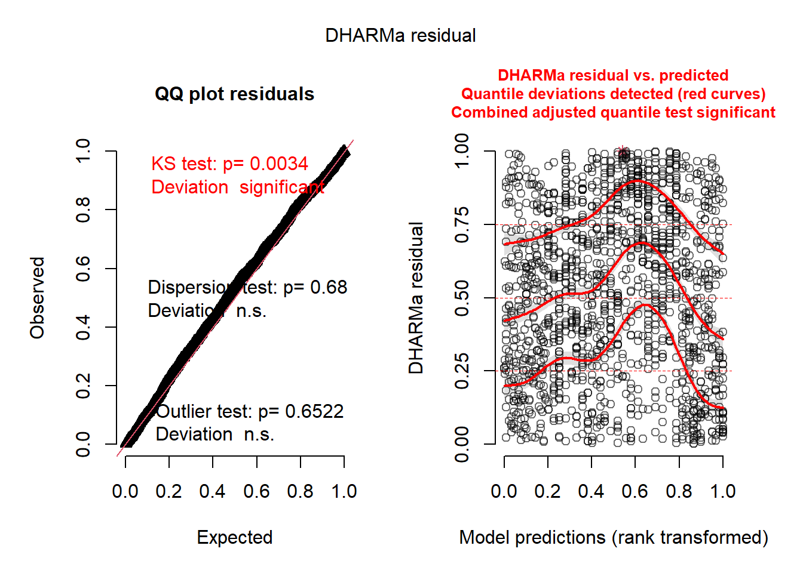
#library(DHARMa)
# Test temporal autocorrelation
#testTemporalAutocorrelation(
# sim_resi,
#time = model_data$unique(time),
# group = model_data$site_name
#)2.5.6.1 Add Laged Outcome
Family: nbinom2 ( log )
Formula:
positive_cases ~ +lag_cases + time + factor(month_num) + (1 | site_name)
Data: model_data
AIC BIC logLik -2*log(L) df.resid
3903.0 3986.5 -1935.5 3871.0 1347
Random effects:
Conditional model:
Groups Name Variance Std.Dev.
site_name (Intercept) 0.131 0.3619
Number of obs: 1363, groups: site_name, 55
Dispersion parameter for nbinom2 family (): 16.3
Conditional model:
Estimate Std. Error z value Pr(>|z|)
(Intercept) -1.435171 0.156960 -9.144 < 2e-16 ***
lag_cases 0.117420 0.017217 6.820 9.09e-12 ***
time 0.031213 0.002626 11.886 < 2e-16 ***
factor(month_num)2 -0.044758 0.123902 -0.361 0.717923
factor(month_num)3 -0.147182 0.127005 -1.159 0.246511
factor(month_num)4 0.451502 0.123161 3.666 0.000246 ***
factor(month_num)5 0.280334 0.124083 2.259 0.023869 *
factor(month_num)6 0.241001 0.123418 1.953 0.050853 .
factor(month_num)7 0.243245 0.122496 1.986 0.047062 *
factor(month_num)8 0.106932 0.123824 0.864 0.387820
factor(month_num)9 -0.034288 0.126749 -0.271 0.786760
factor(month_num)10 0.079136 0.121262 0.653 0.514011
factor(month_num)11 0.245975 0.116987 2.103 0.035503 *
factor(month_num)12 -0.205915 0.127006 -1.621 0.104954
---
Signif. codes: 0 '***' 0.001 '**' 0.01 '*' 0.05 '.' 0.1 ' ' 1AIC(nb_lmixed, nb_lmixed1) df AIC
nb_lmixed 15 4034.918
nb_lmixed1 16 3902.978